Vedalaşma
Zamanı takvim yapraklarının arasına sıkıştıramazsınız. Zaman, siz onu sıkıştırmaya çalıştıkça akıp gider parmaklarınızın arasından. Onu tutmaya çalışır, biraz daha yavaşlaması için dua eder, çok hızlı akıp geçtiği için kızarsınız… Ancak zaman, asi bir çocuktur ve söz dinlemez.
Zaman yine söz dinlemedi ve sohbetimiz, zaman denen bu yaramaz çocuk yüzünden bitmek üzere.
Zaman geçiyor… Söz dinlemiyor. Dakikalar birbirini kovalıyor ve mevsimler değişiyor, insanlar değişiyor, gün bitiyor, kitap bitiyor…
Bir şeylerin bitmesi acı vermez her zaman insana. Bazı sonlar insanı üzer ve ben insanı üzen sonları hiç sevmem. O yüzden bu kitap biterken, senin bunca yıl biriktirdiğin acıların, öfkelerin, mutsuzlukların da bitiyor olması beni mutlu ediyor.
Biten her şey hüzünlendirmez insanı. Acılar biterken mutluluk seremonisi başlar ve bu bitiş, muhteşem başlangıçlara gebedir.
Bu son bölümde vedalaşmıyoruz seninle. Senin yolculuğun şimdi başlıyor. Sen hayallerine giden yola koyuluyorsun ve ben de senin arkandan el sallıyorum. Arkandan bir tas su döküyorum ve “Yolun açık olsun…” diyorum.
Sen bu yolda korkularının üstüne yürüyorsun ve korkuların cesarete dönüşüyor.
Affedemediğin geçmişini bağışlıyorsun ve geçmişin, sırtında bir yük olmaktan çıkıyor.
Hayallerin, kollarını açmış ve senin onları kucaklayacağın zamanı sabırsızlıkla bekliyor.
Bir mucize tohumu serpiliyor evrene ve o mucize senin adını sayıklıyor.
Sen bilincine söylüyorsun, bilinçaltın anlıyor…
…ve kâinatın her bir zerresi sana, “Haydi, kalk artık ayağa!” diye haykırıyor…
O sesi ben duyuyorum… Ya sen?
Mustafa Çay
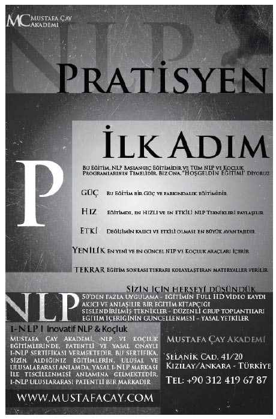
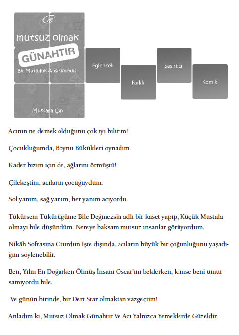
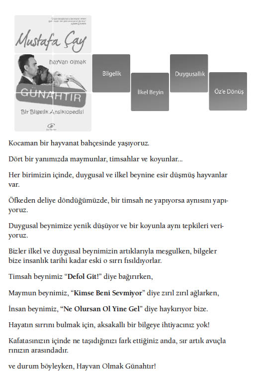
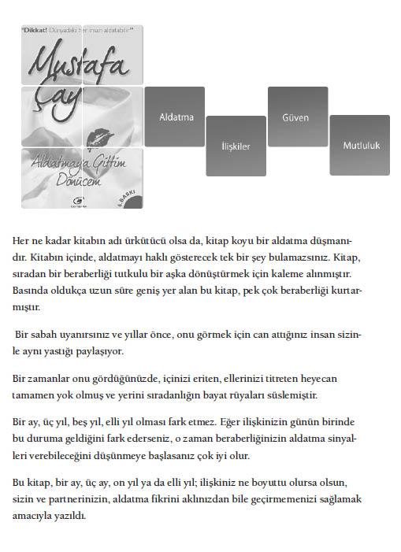
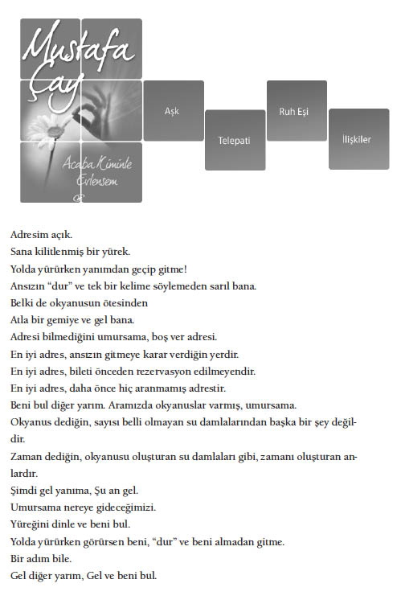
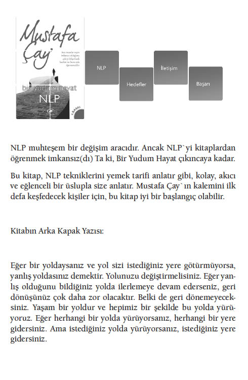
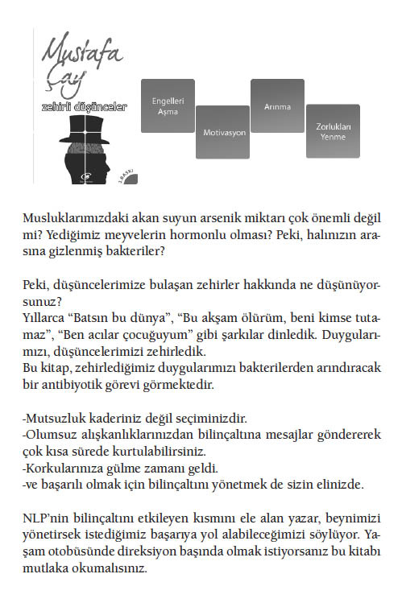
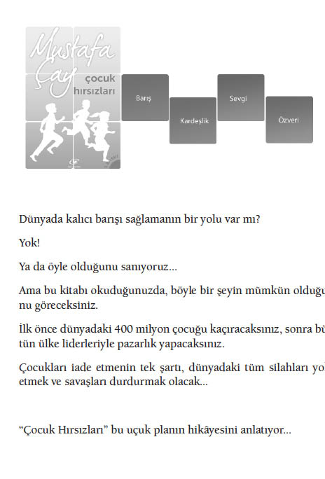
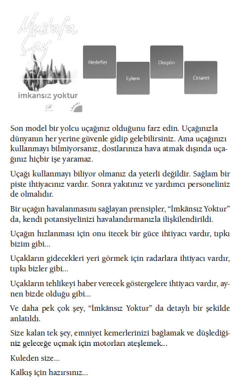
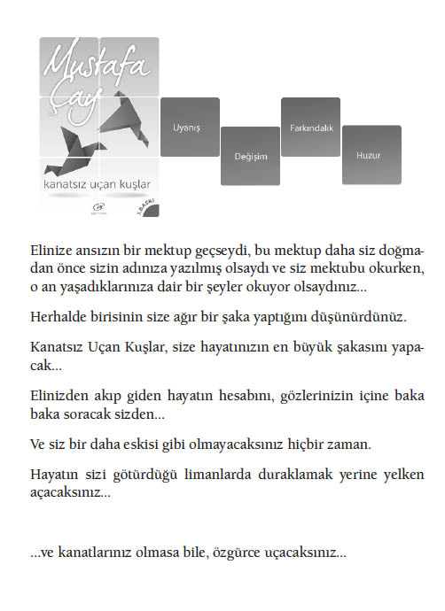
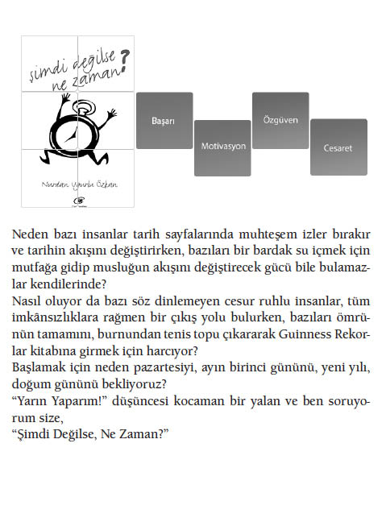
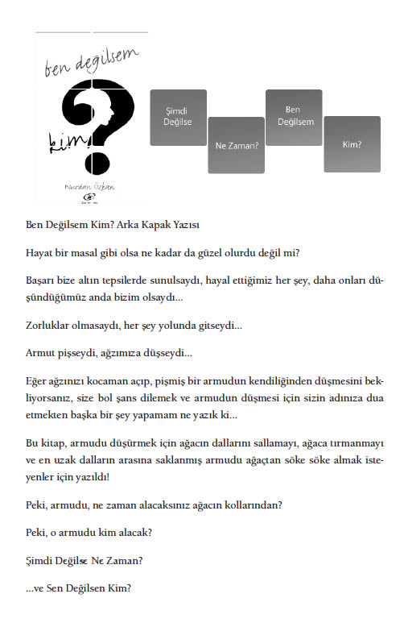